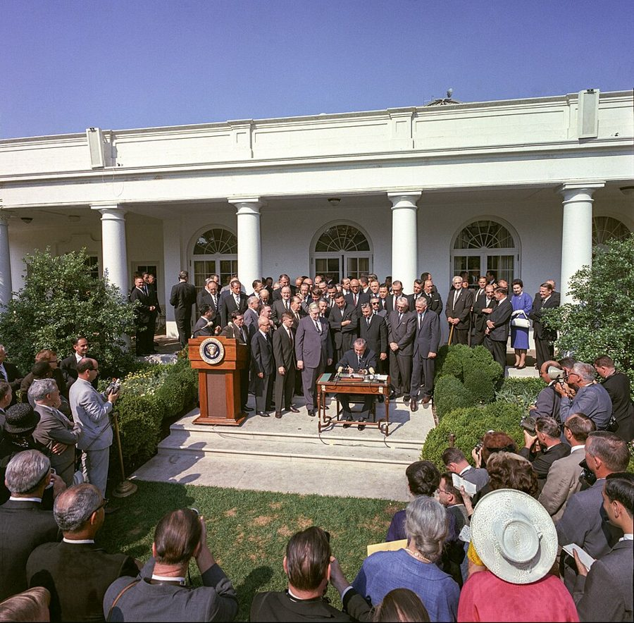
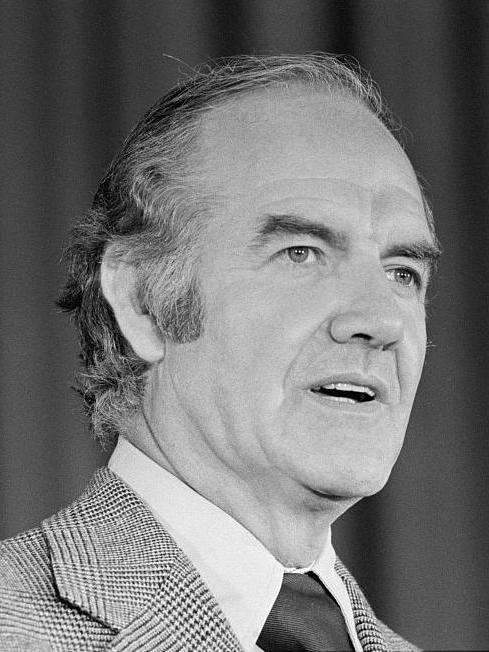
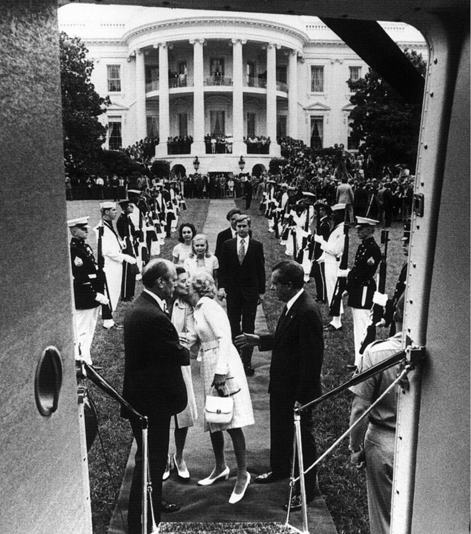
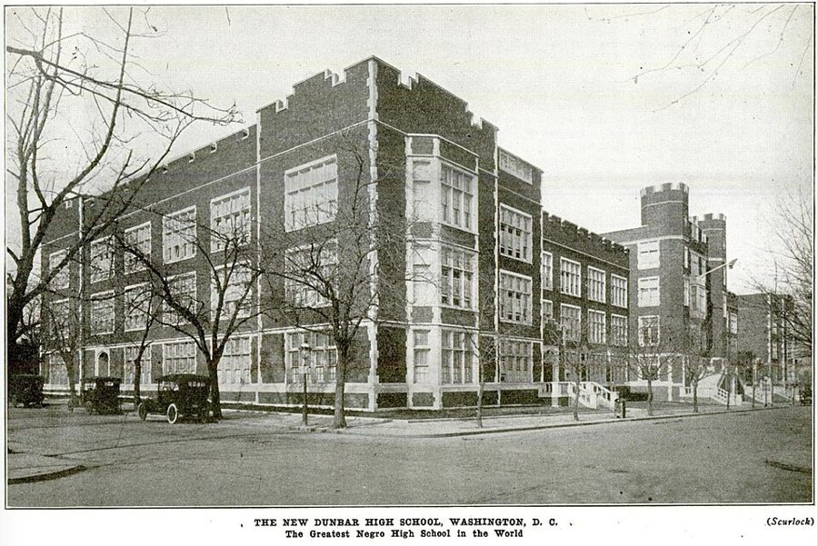
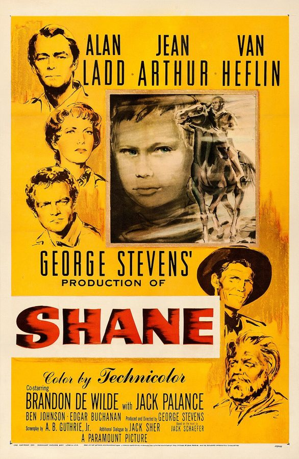

这一章在做什么
接上一页：他在 U.C.L.A. 有了终身教职，头两本书快要出版。这一页是 1972 到 1974 年，他四十二到四十四岁，离开洛杉矶两年，去华盛顿的 Urban Institute 主持一个族群研究项目。
主线是钱和人事：谁给钱，谁使绊子，谁靠得住。中间夹着越战、大选、两个孩子和一段快到头的婚姻。读的时候盯住那些没有名字的传话人。
1972 1973 1974 1975
华盛顿
6 月 水门闯入
11 月 尼克松连任
5 月起 参议院听证
8 月 9 日 尼克松辞职
他的项目
8 月 到任
年初 计划书写完
6 月 两笔钱到账
年底 裁员
3 月 福特拨款
7 月 31 日 辞职
他的书
春 写提纲
秋 两本书出版
春 Dunbar 文章
Race and Economics 才出版
本站示意图。中排色条是他在 Urban Institute 的两年。下排虚线是 Race and Economics 从提纲到出版拖过的时间，原因见第 17 节。上排的事书里没有写，放在这里对照。
出场的人
这一页有名有姓的人不多，没有名字的人反而多。先把有名字的认清。
Walter Williams 男，真名 经济学家，上一页在 U.C.L.A. 认识的。是他建议作者来 Urban Institute；他的办公室在另一层楼。第 16 节那句评语和第 23 节的晚饭都是他。
the vice president 没有名字 作者的顶头上司，自称在华盛顿混得久，事事要插手。第 16 节对吼的和第 20 节要一起去 O.E.O. 的是同一个人。
Bill 只有名 Urban Institute 的头（书里先叫 the head，后叫 president）。只在第 20 节的两通电话里出现。
Lynn /lɪn/，女，只有名 第 24 节请来的行政协调人，实际上替他管项目。第 26 节交代了她后来的去向。
Bruce Harrington 书里注明是化名 从 Urban Institute 出走的人。本人没有出场，只在第 18 节的一顿午饭上被人问起。
Ed 只有名 Race and Economics 的出版商。第 17 节给他寄棋书、打电话的就是他。
Irving Kristol /ˈɜːrvɪŋ ˈkrɪstəl/，男，真名 季刊 The Public Interest 的主编，年轻时是托洛茨基派，后来被称作「新保守主义教父」。第 21 节请他吃饭，出钱让他写 Dunbar。
Margaret Just Butcher 女，真名，书里又叫 Dr. Butcher Dunbar 高中的毕业生，1950 年代华盛顿教育委员会的委员。第 21 节作者打电话问她。
Al my radical friend Al 反复出现的那位左派朋友。第 23 节来家里吃饭，碰上 Walter。
John 和 Lorraine 儿子、女儿 儿子六岁，迷上了算术。女儿一岁半，已经会说话。妻子在这一页仍然没有名字，只在第 25 节出现一句。
五个没有名字的传话人。 这一页的情节多半是靠「有人私下告诉我」推进的，听书时容易混：基金会里把他拉到一边的黑人女职员（第 18 节）；Urban Institute 管理层里的内线（第 18 节）；请他吃午饭的政府高官（第 18 节）；请他去开会的福特基金会官员（第 19 节）；带他去酒吧的政界人士（第 20 节）。另有洛克菲勒基金会的联系人（第 20、22 节）。作者都没给名字。
背景：作者默认你知道的事
智库，和 Urban Institute
think tank（智库）不招学生，专做研究，靠政府合同和基金会的钱运转。Urban Institute 1968 年在华盛顿成立，是约翰逊政府推动建的，任务是研究城市问题、评估联邦的社会项目，所以它要的是政策建议。作者只肯做打底子的研究，不肯开药方。第 16 节的争执从这里来。
研究经费怎么走
grant 是拨给一个项目的钱，不用还，但要先交计划书（proposal）给出钱的一方评审。钱不直接给研究者，而是打到他所在的机构，机构抽一笔管理费（overhead），书里说大约一半。所以项目主任要自己出去找钱，他和机构是雇员和东家，也可能是对手。
计划书：他自己一家家去送、去讲
O.E.O.（联邦机构）
32.5 万美元，主拨款
主的到了，补的才放
洛克菲勒基金会
10 万，补充拨款
福特基金会
10 万，1974 年 3 月
Urban Institute
收款、管账
抽约一半管理费
族群研究项目
他和几位研究员
秘书、各地的助手
按需请的顾问
1972 年 8 月的启动经费
只够发工资、写计划书
本站示意图，数字是书里给的。福特和洛克菲勒都是设在纽约的大型私人基金会。粗线是钱，细线是计划书。
O.E.O.：「向贫困开战」的机构

1964 年 8 月 20 日，约翰逊总统在白宫玫瑰园签署《经济机会法》，O.E.O. 由此设立。Cecil W. Stoughton，公有领域，维基共享资源 Office of Economic Opportunity 是约翰逊总统 1964 年「向贫困开战」（War on Poverty）时设的联邦机构，管职业培训、社区项目等。尼克松 1972 年连任后着手撤掉它，换了一批主管，反对的人告上法院。第 20 节的换班和第 22 节的法院禁令，是这场风波的两头。那时联邦的财政年度到 6 月 30 日结束。
1972 年大选和水门

麦戈文，1972 年 6 月。Warren K. Leffler，公有领域，维基共享资源 
1974 年 8 月 9 日，尼克松辞职后在白宫南草坪登机离开。Oliver F. Atkins，公有领域，维基共享资源
1972 年民主党的总统候选人是参议员麦戈文（George McGovern），主张立刻从越南撤军。11 月尼克松赢了 50 个州里的 49 个。那年 6 月，有人潜入华盛顿水门大厦的民主党总部被捕；1973 年参议院开听证会，1974 年 8 月 9 日尼克松辞职。作者 7 月 31 日离开华盛顿。这一页一个字没提水门。
Dunbar 高中

1917 年的 Dunbar 校舍。作者不详，公有领域，维基共享资源 华盛顿的 Dunbar High School 前身 1870 年开办，是美国第一所给黑人办的公立高中，1916 年以黑人诗人 Paul Laurence Dunbar 命名。隔离年代它从全城招黑人学生。1954 年最高法院判公立学校隔离违宪，华盛顿随后改成按住址就近入学。作者的文章 1974 年春登在 The Public Interest 上。
Shane 里的枪手

《原野奇侠》（Shane ）1953 年的海报，演员表最后一位是 Jack Palance。Paramount Pictures，公有领域，维基共享资源 Shane （1953）是美国人都看过的西部片：大牧场主雇来职业枪手，要把垦荒的小农户（homesteaders）赶走。枪手戴黑帽，由 Jack Palance /ˈpæləns/ 演，是银幕上出名的反派。第 19 节作者说自己被请去演这个角色，意思是：你自己不出头，找我来替你开枪。
留个记号：后面还会回来
这一页里作者明说「后来才知道」的地方不多，更多的是前面埋下、这里接上的线。
只供知识，不开药方 第 16 节 他接这份工作的条件。本站的看法：这一条比和副总裁吵架要紧，后面读到他谈自己的书时可以回来对一下。
年轻时都是左派 第 21 节 饭桌上人人讲起自己的过去，他加了一句 as I had been。接的是前面几章里他年轻时的立场。他说这是「许多次里的头一次」。
Center for Advanced Study 第 27 节 上一页他去斯坦福时见过这家机构，当时说从接触到邀请常要隔好几年。这里来了通知。旁边那家 Hoover Institution 也先记着。
婚姻 第 25、27 节 全书对婚姻的交代一向只有一两句。这一页有两句，都在小节的最后。
词与短语
词条按书里出现的顺序排，小标题是原书用 • • • 隔开的各节。斜体小字是那句话里的几个词，在 Kindle 里搜它就能跳到那一句。单个的生词长按就能查，这里收的主要是词典帮不上忙的。
第 14、15 节 · 去华盛顿之前
think tank
… at two more think tanks—the Rand …
智库
Rand Corporation 在洛杉矶边上的圣莫尼卡，最早替空军做研究。
scope
… Urban Institute offered me more scope. …
施展的余地
不是「范围」。给的权限大、题目自己定。
spare us the suspense
… sparing us the long agonizing suspense …
让我们免了那份悬着心的煎熬
spare 某人 某事 ：让他不必受。儿子 John 很晚才开口说话，见前两章。
unstructured school
… class at the unstructured school he …
不排固定课表、由孩子自己选着学的学校
1970 年代初时兴的办学法。所以他可以不去上算术课。
believe in
… never really believed in unstructured schools, …
信得过，赞成
不是「相信存在」。后半句用同一个词：他信的是结果。
come out of his shell
… come out of his shell as …
不再缩着，肯和人打交道了
shell 是壳。
misgivings
… my initial misgivings escalated into exasperation, …
疑虑
这一句三级跳：疑虑、恼火、怨恨。escalate（升级）本来就是越战年代说战事的词。
bombing pauses
… those who called for bombing pauses. …
暂停轰炸（北越）
当时反战一方常提的要求。他两头都不认。
lives on the line
… with their lives on the line, …
拿命顶在前面
on the line = 押上了，随时会丢。
back them up
… back them up with everything we …
做他们的后盾
他的意思：要么全力打，要么别把人留在那儿。这不是反战运动的立场。
primary
… in the Democratic Party primary for …
党内初选
春夏间各州选本党的候选人。和 11 月的正式大选是两回事。
wear on
… As the election campaign wore on, …
（时间）一点点拖过去
wore 是 wear 的过去式，和「穿」无关。
not have the stomach to
… I didn’t have the stomach to …
实在下不去手，咽不下
stomach = 胃口、承受力。
registered as a member
… never again registered as a member …
在选民登记时填某个党
美国人「入党」只是登记选民时勾一栏，为的是能投那个党的初选。没有党证，也不交党费。
第 16 节 · 开张，先吵一架
grant
… with an initial grant representing a …
拨给研究项目的经费
这一页的关键词，见上面的图。
in very low gear
… I began in very low gear, …
起步很慢，不急着铺开
汽车的低档。
temporary agency
… sent over from a temporary agency. …
派临时工的中介公司
下文的 temporaries 就是这样派来的临时秘书，口语叫 temps。
shouting match
… up in a shouting match with …
互相吼的一场架
match 是比赛。
hamstrung
… “If I get hamstrung by bureaucrats …
被捆住手脚
hamstring 是腿后的大筋，割断了就走不了。过去分词 hamstrung。
a long two years
… be a long two years for …
难熬的两年
a + 复数：把两年当成一整段。long = 熬不到头。
make themselves a pain
… other bureaucrats made themselves a pain …
处处招人烦
a pain = a pain in the neck。
run-ins
… and my run-ins with them became …
冲突，顶撞
for all concerned
… long two years for all concerned. …
对每一个沾边的人
把上一段的威胁原话收回来：果然如此，而且人人有份。indeed 是包袱。
come on like
… you come on like Mr. Nice …
一上来给人的印象像……
Mr. Nice Guy = 好好先生。
take advantage of
… they try to take advantage of …
欺负，占你便宜
宾语是人时是贬义；宾语是机会时是「利用」。
hard as nails
… You’re hard as nails. Let them …
硬得很，一点不让
nails 是钉子。朋友的评语，作者照录，没有反驳。
in principle
… Institute had accepted in principle my …
口头上、原则上（答应了）
后面必有 in practice（实际上却……）。
policy-making types
… get me to hire policy-making types, …
搞政策的那号人
types 指「那一类人」，带点瞧不上。
micro-manage
… administrators trying to micro-manage my project. …
事无巨细都要插手
这个词在这一页出现四次，第 17 节用到了审稿编辑身上。
was not about to
… but I was not about to …
绝不肯
be about to 是「即将」；否定式是「休想让我」。
第 17 节 · 审稿编辑和棋书
on the publication front
… were active on the publication front. …
出书这条线上
front = 战线。
copy-editing
… However, the copy-editing of Race and …
文字加工
copy 是稿子。copy-editor 只管错字、体例、语句，不该管观点。
betray
… the questions betrayed the ignorance of …
暴露出
不是「背叛」。第 24 节 Lynn 那句里才是背叛。
reach an impasse
… and I reached an impasse when …
僵住了
读 /ˈɪmpæs/。
not to be confused with
… (not to be confused with a …
可别当成是
本是词典、说明书的用语。爱下棋，不等于下得好。
improve my game
… they will improve my game a …
长棋
my game = 我的水平。整段对话客客气气，一步不让。
revert to
… that the manuscript reverted to me …
（权利）归还给
合同用语。两年不出，稿子收回，可以另找出版社。出版商是赶在这之前让的步。
第 18 节 · 找钱
research agenda
… detailing the research agenda of the …
要研究的题目清单
agenda 这里是「打算做的事」。第 21 节末尾的 agenda 是贬义：早就定好的盘算。
unofficially
… Unofficially, they are doing everything they …
暗地里
和前一句的 Officially（明面上）成对。
overhead
… about half in administrative overhead charges. …
机构抽的管理费
本义是房租水电这类摊不到具体项目上的开销。
confidential contact
… I had a confidential contact within …
私下通消息的内线
contact 指人。这一页还有 local contacts、my contact at…。
walk down the street
… can walk down the street and …
出门另立门户
不是散步。意思是：容易得很，走几步路的事。
emotionally unstable
… say that he was ‘emotionally unstable’?” …
「情绪不稳定」
引号说明这是别人的原话：有人在外面这样说 Harrington，官员是来核对的。
smile knowingly
… The official smiled knowingly and we …
会意地一笑
他听懂了：话是谁放出来的，为什么放。
第 19 节 · 福特基金会的会
stick his own neck out
… to stick his own neck out …
自己出头冒险
伸出脖子等人砍。
shoot down
… come in to shoot down the …
开枪撂倒；驳倒
双关。电影里是真开枪，会议上是把别人的提案驳掉。见上面「Shane 里的枪手」。
sense and nonsense
… usual mixture of sense and nonsense, …
有道理的话和胡话
usual：这种会向来如此。
dignify
… that it would “dignify” Jensen’s theory …
抬举，给它本不配有的体面
Arthur Jensen 是伯克利的教育心理学家，1969 年发表长文，主张族群间智商测验分数的差距部分出于遗传，引起极大争议。
have no faith in
… that he had no faith in …
对……没有信心
这是作者的推断，不是那位学者自己说的。
in the sense in which you mean it
… “In the sense in which you …
照你说的那个意思
后面跟一个 no。答的人留了余地：换一种意思，也许算「认真」。
第 20 节 · O.E.O. 和副总裁
under the “poverty” label
… the taxpayers under the “poverty” label), …
记在「扶贫」的名目下
挖苦：扶贫机构请客，去的是很贵的法国馆子。
shake-up
… had been a shake-up in the …
人事大换班
nit-picking
… Gone were the nit-picking questions and …
挑刺的
nit 是虱子卵。句子倒装：Gone were… = ……都不见了。
pettifogging
… questions and the pettifogging statements. …
在细枝末节上纠缠的
读 /ˈpetifɔːɡɪŋ/。
throw them a life preserver
… to throw them a life preserver. …
扔救生圈给他们
life preserver 是美式说法的救生圈。
good faith effort
… and report a good faith effort …
确实诚心试过
法律用语。他试了，搬不成，对方认这个账。
posture
… His posture was that his “expertise” …
摆出来的架势
expertise 加引号 = 所谓的内行。
an old Washington hand
… he was an old Washington hand. …
华盛顿的老手
hand = 干某一行的人。下文的 older hands 同。
go over
… “We don’t go over on Friday,” …
过去（到那边）
重音在 We 和 I 上。争的不是时间，是谁去。
this character
… gotten completely fed up with this …
这号人物
character 指人时带贬义：这家伙。fed up with = 受够了。
crawling with
… fact it was crawling with vice …
到处爬满了
通常说虫子。
report to
… arrangement that had me reporting to …
归……管
不是「汇报一次」，是组织关系上的上下级。
hang up on
… I said—and hung up on him. …
摔他的电话
on 表示冲着谁。后一句的 hung up 只是放下听筒。
the net result
… The net result was that I …
算下来的结果
net = 净的，会计用语。
第 21 节 · Kristol 和 Dunbar
Trotskyite
… youthful days as a Trotskyite. …
托洛茨基派
读 /ˈtrɒtskiaɪt/。1930 年代纽约的左派大学生里，反斯大林的那一支。
news to him
… This was news to him and …
他头一回听说
the black establishment
… no one in the black establishment …
黑人里的头面人物和主流团体
establishment = 当权的那个圈子。
ghetto school
… a typical substandard ghetto school within …
黑人贫民区的学校
ghetto 在美国指城里黑人聚居的穷街区。
minutes
… back through the minutes of the …
会议记录
不是「分钟」。读音相同 /ˈmɪnɪts/。
feisty
… members—a feisty woman named Margaret …
泼辣，敢顶嘴
读 /ˈfaɪsti/。
the crusade of the hour
… was the crusade of the hour …
当时压倒一切的大事业
crusade 本是十字军。of the hour = 眼下最热的。
“leaders”
… was that black “leaders” had a …
所谓的领袖
引号是作者加的，表示他不认这个称呼。
retard
… whatever retarded or distracted from that …
拖慢，妨碍
动词，重音在后 /rɪˈtɑːrd/。
busing
… integration in general, including busing. …
用校车把学生送到别的学区上学
1970 年代法院为了让黑白学生同校而下令推行，争议极大。
第 22、23 节 · 钱到了；Al 见 Walter
disbursement
… director’s signature for disbursement of the …
拨付
动词 disburse。批了不等于付了。
pending
… on hold, pending a resolution of …
等……有了结果再说
介词用法。
legal snarl
… when the legal snarl would be …
一团乱麻的官司
snarl 这里是缠成的死结，所以后面用 untangled（解开）。
at the eleventh hour
… At the eleventh hour, I phoned …
在最后关头
出自《圣经》里葡萄园工人的比喻。
go out on a limb
… “I’m going out on a limb, …
担着风险破例
limb 是树枝。爬到细枝上去。
fiscal year
… end of the fiscal year on …
财政年度
当时联邦政府的财政年度是 7 月 1 日到次年 6 月 30 日。
good news and bad news joke
… a “good news and bad news” …
「一个好消息一个坏消息」式的笑话
美国笑话的固定套路。
funded
… Minorities Research Project has been funded.” …
拿到经费了
out there
… any black people lived out there!” …
那么远的那一带
指城外的白人住宅区。Al 平时以黑人激进派自居，这是这一节的笑点。
第 24、25 节 · Lynn；回到家
in the wake of
… research efforts in the wake of …
紧跟在……之后
wake 是船尾的水迹。
a sympathetic ear
… could expect a sympathetic ear among …
有人愿意听你诉苦
straw man
… that I was a straw man whose …
摆设，说了不算的人
这里不是逻辑谬误里的「稻草人」，是稻草扎的假人。
deadwood
… the troublemakers and the deadwood. …
吃闲饭的人
枯枝。of course 两个字是冷笑：钱少了，正好有理由。
camaraderie
… There was a camaraderie among us …
同甘共苦的情谊
读 /ˌkɑːməˈrɑːdəri/。
divest myself of
… me to divest myself almost completely …
把……卸掉
本是脱衣、出售资产的词，后面接 of。
de facto
… She became the de facto project …
事实上的
拉丁文，读 /ˌdeɪ ˈfæktoʊ/。名义上不是，实际是。
scholar in residence
… in effect a scholar in residence, …
驻院学者
机构请来只管写作、不管事的学者。他说自己在自己的项目里成了这种人。
Caesar in his greatest glory
… Caesar in his greatest glory never …
最风光时的凯撒
古罗马将军得胜回城有凯旋式（triumph），所以下面用 triumphant。Caesar 读 /ˈsiːzər/。
not nearly as thrilled
… was not nearly as thrilled as …
远没有那么高兴
往轻里说。接下来一句才是实话。
come apart
… was now starting to come apart. …
散架
第 26、27 节 · 收尾，回加州
create mischief
… Institute management to create mischief was …
使坏
mischief 用在大人身上不是「淘气」，是暗中捣鬼。
stand by
… None of those who stood by …
站在（我）这边不走
不是「袖手旁观」。stand by 某人 = 力挺。
bear the brunt of
… and borne the brunt of internecine …
首当其冲
internecine /ˌɪntərˈniːsaɪn/：自己人打自己人的。
independently wealthy
… to becoming independently wealthy in her …
有钱到不必靠工作过活
Fortune 500 是《财富》杂志每年排的美国五百家最大公司。
full professor
… had been promoted to full professor …
正教授
美国的三级：assistant、associate、full。上一页他是 associate professor with tenure。
by default
… returning to U.C.L.A. by default and …
因为没有别的选择
程序员熟悉的「默认」：不是选出来的，是没人去改。
值得停下来的句子
My feeling was that there will never be a shortage of people to come up with ideas for policy.— 第 16 节，他不肯让项目提政策建议的理由。本站译：我的感觉是，出政策主意的人永远不会缺。
主干是 there will never be a shortage of A to do B 。前面整句是过去时，这里却用 will：他说的不是 1972 年的看法，是一条到现在也成立的判断。
下一句交代缺的是什么：能让政策站得住的知识。本站的看法：他后来的书大多是在做这后一件事，这一节可以当作他自己立下的分工。读的时候别被前面的吵架带走，这一段才是他来华盛顿的条件。
This time, I was returning to U.C.L.A. by default and remaining in my marriage by default—both for the children’s sake …— 第 27 节，这一章倒数第二句的前大半。本站译：这一回，我是没得选才回 U.C.L.A.，没得选才留在婚姻里，两样都是为了孩子……
两个 by default 并排，把工作和婚姻放在同一个句式里。This time 对的是上一句的 1969 和 1970：那两次他是满怀希望来加州的。
章名是一首兴冲冲的歌，章末的调子却在这里。再往下一句他又转回来，说加州仍然像家。两句都要读。
检查一下理解
先在心里答，再点开。答错的那题，回书里把那一节再读（或再听）一遍。
1. 1972 年 11 月的总统选举，作者把票投给了谁？ 谁也没投。他投麦戈文是在民主党的初选里，理由只有一条：麦戈文承诺结束越战。到了 11 月，他对麦戈文和尼克松都投不下去，此后也不再登记为任何党的选民。
2. 项目拿到的钱有一半归 Urban Institute，它为什么还要暗中拦着？ 内线的解释是：项目做大了，他随时可以带着名声出去自立门户，和研究所抢经费。管不住的人，不如让他没钱、自己走，这样不必闹出丑闻。作者用 Bruce Harrington 后来的去向印证了这个说法。
3. 政府高官在午饭上问 Bruce Harrington 是不是「情绪不稳定」，他是在关心这个人吗？ 不是。那是有人在外面放的话，官员拿来向作者核对。作者的回答把话顶了回去：这人再稳定不过，离开 Urban Institute 正是他最清醒的时候。官员一笑，表示听明白了话的来路。
4. 「你是要我演 Jack Palance」是谁对谁说的？对方承认了吗？ 是作者对请他去开会的那位福特基金会官员说的。那人担心会议的走向，自己又不愿出头反对，临时把作者请来唱反调。他的回答是「你要这么看也行」，等于承认。
5. 洛克菲勒基金会的十万美元，为什么先说不能给，后来又给了？ 规矩是主拨款到账以后才放补充拨款，免得主拨款落空、小钱白花。O.E.O. 的钱批了却被法院禁令卡住，项目眼看要裁人。作者打电话说明人一散就找不回来，联系人自己担了风险，破例先给。
6. 「坏消息是族群研究项目拿到钱了」，这是谁嘴里的坏消息？ Urban Institute 内部流传的笑话。对作者是好消息；对想让他断粮走人的管理层是坏消息。作者只记得坏消息这一半，好消息是什么他说忘了。